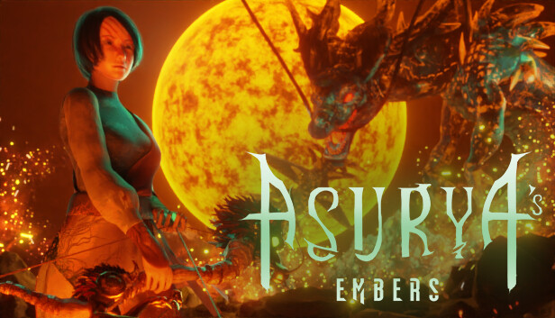

Asurya's Embers
Click here to download on Steam!
Click here to download on the Epic Store!
In Asurya's Embers, I composed two key themes for the climactic final boss encounter: Approaching the Dragon and The Final Battle. As players near the dragon’s lair, the haunting strains of Approaching the Dragon begin to play, building tension and foreshadowing the epic confrontation ahead. This theme sets the stage for the grandeur and danger awaiting them.
When the player finally faces the dragon, the intense battle begins, accompanied by The Final Battle. This dynamic piece drives the high-stakes action, underscoring the urgency and magnitude of slaying the formidable foe.
The game’s soundtrack blends Nepali and Chinese instruments with Western orchestration, creating a unique and immersive soundscape. This fusion of musical styles reflects the grandeur of the game’s world and heightens the emotional impact of its climactic moments.
Music from Asurya's Embers
Listen to one of the themes from the game:
Approaching the Dragon
The Final Battle (Dragon Combat)